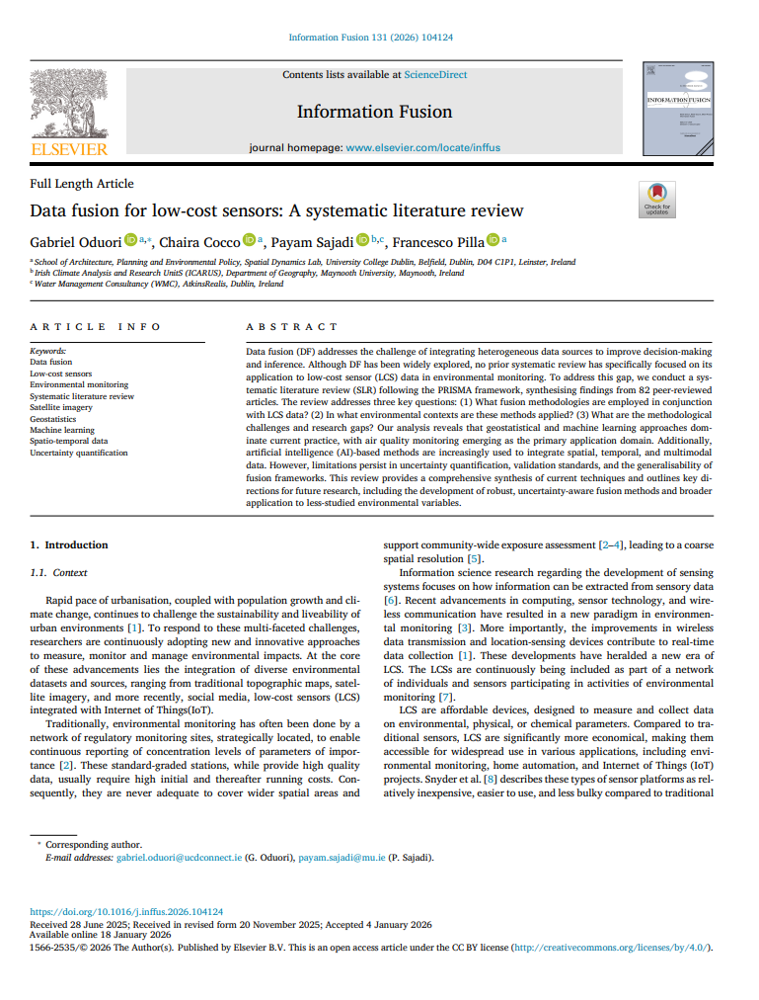
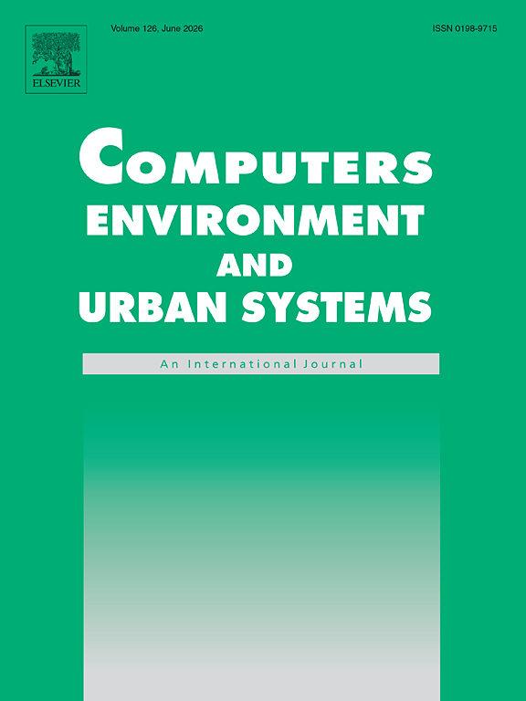
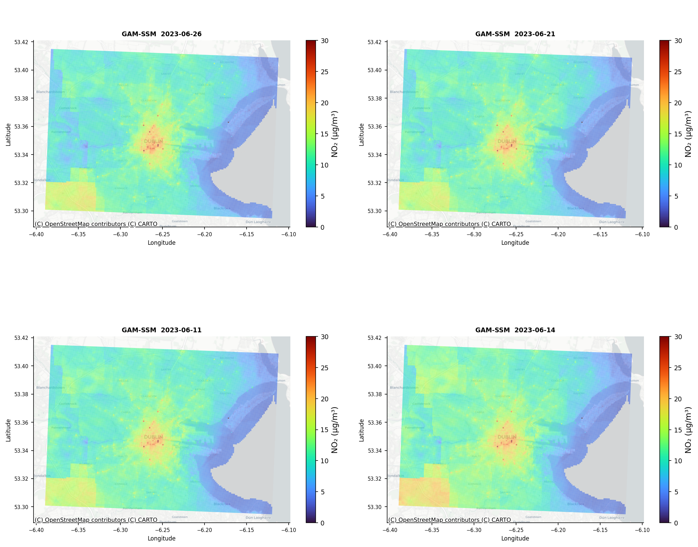
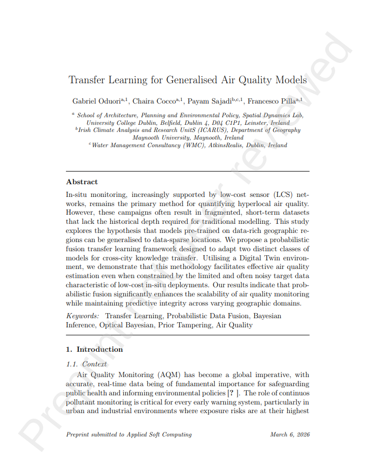
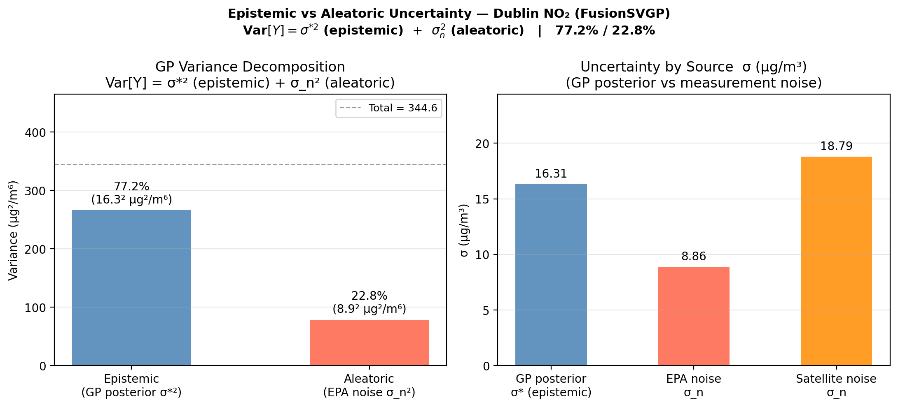

PhD Viva Voce Presentation
University College Dublin
Tuesday, 21 April, 2026
Central Research Question
How can probabilistic models be designed to fuse heterogeneous air quality data (in-situ sensors, satellite observations, and spatial covariates) for accurate and uncertainty-aware estimation of pollutant concentrations?
| Approach | Uncertainty | Multi-source | Temporal | Transferable |
|---|---|---|---|---|
| LUR | ✗ | Partial | ✗ | Limited |
| Kriging | Partial | ✗ | ✗ | ✗ |
| Deep Learning | ✗ | ✓ | ✓ | Limited |
| This thesis | ✓ | ✓ | ✓ | ✓ |
Method: Systematic Review of 80+ papers across probabilistic and deterministic fusion methods
Key finding: No unified probabilistic framework exists — deterministic methods dominate, uncertainty is largely ignored

Method: Gaussian Process framework integrating TROPOMI satellite observations and LUR covariates with in-situ reference data
Key finding: High-resolution probabilistic NO₂ maps with calibrated uncertainty estimates at every location

Method: Hybrid Generalised Additive Model combined with State Space formulation embedding LUR
Key finding: Dynamic prediction with principled uncertainty — model updates as observations arrive. Currently revising with wind-sector based covariates.

Method: Transfer learning applied to pre-trained probabilistic fusion models across different urban deployments
Key finding: Probabilistic structure transfers well even when city morphology differs — reducing city-specific training data requirements substantially

Method: Gaussian Surrogate Uncertainty Quantification Model — propagating sensor noise, retrieval error, and model uncertainty end-to-end
Key finding: Source-decomposed uncertainty enables transparent, decision-relevant communication of what the model does and does not know

| Research Question | Key Finding | Status |
|---|---|---|
| RQ0: Systematic Review | Unified probabilistic framework absent from literature | 🟢 Published |
| RQ1: Probabilistic Fusion | FusionGP — calibrated spatial uncertainty maps | 🔵 Submitted |
| RQ2: Spatio-temporal LUR | Hybrid GAM-SSM captures temporal evolution | 🟡 In revision |
| RQ3: Transferability | Probabilistic structure transfers across cities | 🟡 Under review |
| RQ4: Uncertainty | Source-decomposed uncertainty supports decisions | 🔵 In prep |
Fusion of In-Situ Network and Auxiliary Information: A Probabilistic Approach
A unified probabilistic framework for heterogeneous air quality data fusion — accurate, uncertainty-aware, and transferable across urban environments.
Gabriel Oduori · University College Dublin
gabriel.oduori@ucdconnect.ie
Supervised by:
Assistant Prof Chiara Cocco
Professor Francesco Pilla